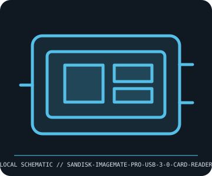

[ REMOVABLE MEDIA // INDIVIDUAL RECORD ]
SanDisk ImageMate PRO USB-C Multi-Card Reader (SDDR-489)
SanDisk SDDR-489 multi-format external reader. This entry describes the identified medium or reader, not a bundled drive/media pair; exact capacity and compatibility are model- and host-dependent.

IDENTIFICATION: Record the full label, manufacturer part number, revision/date code, format markings, and packaging. Product-family names alone do not identify capacity generation or supported drive.
Format and compatibility
| Catalog subcategory | Flash drives and memory cards |
|---|---|
| Catalog identity | SanDisk ImageMate PRO USB-C Multi-Card Reader (SDDR-489) |
| Format / era | SanDisk SDDR-489 multi-format external reader |
| Media/device distinction | This is the removable-media reader device; the SD, microSD, and CF cards are separate media. |
| Capacity / interface | SDDR-489 ImageMate PRO external reader with card slots for SD, microSD, and CompactFlash media; USB Type-C host connector with USB 3.0 / USB 3.2 Gen 1 (5 Gb/s signaling) data interface. This is a reader device, not storage media. |
| Compatibility | Requires a USB-C connection; use a suitable USB-C-to-USB-A data adapter/cable for Type-A hosts and host OS support for USB mass-storage readers. Slot support is format- and capacity-specific; the reader cannot make SDXC/CF media work in a host OS that lacks filesystem or driver support. |
| Variant caveat | Different ImageMate generations and SDDR model numbers have different slot combinations and media limits. The SDDR-489 is the USB-C model with SD/microSD/CompactFlash slots; verify the underside model label rather than relying on ImageMate name alone. |
Media care and preservation
Disconnect safely before travel, keep slots free of dust, and insert cards in the marked orientation without force. Avoid liquids and metal tools in slots. For preservation, retain the reader model/firmware and test each card type; the reader is not a backup.
- Preserve original packaging, labels, and acquisition/context notes; photograph both sides and record any write-protect state before use.
- Keep valuable contents in at least two independently verified copies on separate storage. Record a checksum and test a restore; removable media alone is not a preservation plan.
Model and version caveats
Different ImageMate generations and SDDR model numbers have different slot combinations and media limits. The SDDR-489 is the USB-C model with SD/microSD/CompactFlash slots; verify the underside model label rather than relying on ImageMate name alone.
Compatibility statements are limited to the named format/model and published host support. Check manufacturer manual, firmware, regional SKU, and media generation before inserting or writing. A similar connector or cartridge shell is not proof of compatibility.
Sources & further reading
- SanDisk — ImageMate PRO USB-C Multi-Card ReaderManufacturer reader-family page and support; verify SDDR-489 slot layout, USB generation, and media limits from its manual.
- USB Implementers Forum — USB specificationsPrimary interface reference for USB 3.x / USB 3.2 Gen 1 terminology.
Sources identify the relevant standard, manufacturer, or product family. Where an archived SKU-specific datasheet is unavailable, the exact label/manual and supported host list take precedence over family-level marketing claims.